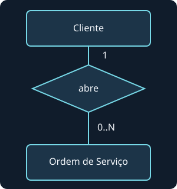

IMA-SC 2027 · Analista de Informática · Tecnologia da Informação · 25/11/2026
Aula 02 — Modelagem relacional, SQL e transações
Núcleo sugerido de 120 minutos, com teoria, exemplos, recuperação ativa e questões separadas. Extensão opcional conforme disponibilidade e lacunas.
Módulo 1 de 2
Modelagem e integridade
1.1 · Entidades, relacionamentos e cardinalidade
Núcleo sugerido: 55 minutos no primeiro módulo, 40 no segundo e 25 de recuperação e questões. Ajuste ao tempo disponível. Se já conhece um tópico, tente explicá-lo de memória antes de ler; concentre-se nas lacunas.
O modelo entidade-relacionamento (DER) representa objetos sobre os quais precisamos guardar dados e os vínculos entre eles. Uma entidade Cliente tem atributos como cliente_id e nome; uma entidade OrdemServico tem os_id, cliente_id e status.
Cardinalidade diz quantas ocorrências podem participar de um vínculo: um cliente pode abrir várias ordens; cada ordem deve pertencer a um cliente. Essa regra 1:N é implementada colocando a chave do cliente na tabela de ordens, não duplicando todos os campos do cliente.
Exemplo resolvido · 1.1
Situação: Aplicação prática do conceito acima.
Identifique os objetos: Cliente e OrdemServico.
Defina um identificador estável por entidade: cliente_id e os_id.
Traduza a regra: uma ordem referencia exatamente um cliente; um cliente pode ter zero ou muitas ordens.
Ao consultar o cliente 7, encontre suas ordens por WHERE cliente_id = 7.
Conclusão: Uma linha em Cliente e três linhas em OrdemServico referenciando o mesmo cliente_id representam um cliente com três solicitações, sem repetir seu endereço em cada ordem.
abre10..NRelacionamento conceitual: Cliente abre OrdemServicoComo ler: retângulos = entidades; losango central = relacionamento; 1 junto a Cliente indica que cada ordem pertence a um cliente; 0..N junto a OrdemServico indica que um cliente pode ter nenhuma ou várias ordens. Não confunda a notação do DER com a posição da chave estrangeira: a FK fica em OrdemServico.
Para lembrar: Pergunte: quem é a entidade? Qual chave identifica uma linha? Em qual lado fica a chave estrangeira?
Armadilha de prova: N:N geralmente exige uma tabela associativa: em vez de repetir colunas de produto em pedido, use ItemPedido com chaves de pedido e produto.
DER vertical: Cliente abre Ordem de Serviço

Cada ordem pertence a um cliente; o cliente pode ter zero ou muitas ordens. A FK fica em Ordem de Serviço.
1.2 · Chaves, NULL e integridade referencial
A chave primária identifica unicamente cada linha e não admite NULL. A chave estrangeira liga a outra tabela e impõe integridade referencial. UNIQUE impede duplicações, CHECK restringe valores e NOT NULL torna o preenchimento obrigatório.
NULL significa dado ausente ou desconhecido. Comparar coluna = NULL não identifica nulos em SQL: use IS NULL. A lógica SQL trabalha com verdadeiro, falso e desconhecido; por isso condições com NULL exigem atenção.
Exemplo resolvido · 1.2
Situação: Aplicação prática do conceito acima.
Insira o cliente 3.
Uma ordem com cliente_id = 3 atende à regra de referência.
Uma ordem com cliente_id = 99, sem cliente 99, é rejeitada pela FK.
Para selecionar ordens ainda sem data de término, use WHERE encerrada_em IS NULL, se essa coluna existir.
Conclusão: A sequência aplica o conceito às condições do exemplo.
Para lembrar: PK identifica; FK relaciona; UNIQUE evita repetição; CHECK limita valores; NOT NULL exige informação.
Armadilha de prova: FK não exige que a coluna seja única: várias ordens podem referenciar o mesmo cliente, e uma FK pode aceitar NULL se não houver NOT NULL.
Exemplo resolvido · 1.2
Situação: Uma FK cliente_id aceita NULL.
ID 7 existente: válido.
ID 999 inexistente: viola FK.
NULL pode ser admitido sem NOT NULL.
Conclusão: FK não implica obrigatoriedade.
1.3 · Normalização: da 1FN à 3FN
1ª Forma Normal: cada campo deve conter valor atômico segundo o modelo; evite listas de telefones em uma única célula. 2ª Forma Normal: estando na 1FN, atributos não-chave devem depender da chave inteira, especialmente quando a chave é composta. 3ª Forma Normal: estando na 2FN, atributos não-chave não devem depender transitivamente de outro atributo não-chave.
Normalizar diminui redundâncias e anomalias de inserção, alteração e exclusão. Não é obrigatório separar tudo em tabelas excessivas: a modelagem deve considerar as regras do negócio e consultas reais.
Exemplo resolvido · 1.3
Situação: Aplicação prática do conceito acima.
Considere PedidoItem(pedido_id, produto_id, nome_produto, quantidade, nome_cliente), com chave (pedido_id, produto_id).
nome_produto depende apenas de produto_id, logo causa dependência parcial: crie tabela Produto.
nome_cliente depende de cliente_id associado ao pedido, não de cada item: crie Cliente e guarde a referência em Pedido.
O modelo resultante Cliente, Pedido, Produto e ItemPedido reduz atualização duplicada. Alterar o nome de um produto requer mudar uma linha em Produto.
Conclusão: A sequência aplica o conceito às condições do exemplo.
Para lembrar: 1FN: valores atômicos; 2FN: depende da chave TODA; 3FN: não depende de outro atributo não-chave.
Armadilha de prova: Estar na 3FN não significa que toda consulta será rápida: JOIN e índices continuam necessários.
Decomposição de tabelas
Tabela
Atributos
Pedido
pedido_id, cliente_id
Cliente
cliente_id, nome
ItemPedido
pedido_id, produto_id, quantidade
Produto
produto_id, descrição
Dependências funcionais decorrem de regras do domínio. A decomposição deve permitir reconstrução por junção sem perda.
Módulo 2 de 2
Consultas e transações
2.1 · SELECT, WHERE, GROUP BY, HAVING e ordem lógica
Uma consulta usa SELECT para projetar colunas, FROM para definir a fonte, WHERE para filtrar linhas, GROUP BY para formar grupos e HAVING para filtrar grupos agregados. ORDER BY ordena o resultado final.
A ordem lógica simplificada é FROM/JOIN → WHERE → GROUP BY → HAVING → SELECT → ORDER BY. Não confunda COUNT(*), que conta linhas, com COUNT(coluna), que não conta valores NULL daquela coluna.
Exemplo resolvido · 2.1
Situação: Aplicação prática do conceito acima.
O WHERE considera só as ordens do cliente 7.
O GROUP BY separa as ordens por situação.
O HAVING deixa somente situações com pelo menos duas ordens.
O SELECT mostra situação e total; o ORDER BY organiza pelo total decrescente.
Conclusão: A sequência aplica o conceito às condições do exemplo.
Para lembrar: WHERE filtra LINHAS antes da agregação; HAVING filtra GRUPOS depois da agregação.
Armadilha de prova: Coluna comum no SELECT de uma consulta agregada normalmente deve estar no GROUP BY; não presuma que COUNT de uma coluna inclui NULL.
Ordem lógica simplificada
FROM / JOIN
Formar linhas.
WHERE
Filtrar linhas.
GROUP BY
Agrupar.
HAVING
Filtrar grupos.
SELECT
Projetar.
ORDER BY
Ordenar.
O plano físico do otimizador pode diferir da ordem lógica.
2.2 · INNER JOIN e LEFT JOIN: diferença de linhas
INNER JOIN mantém pares de linhas que satisfazem a condição de junção; LEFT JOIN mantém todas as linhas da tabela à esquerda, preenchendo com NULL as colunas à direita quando não houver correspondência. A condição deve descrever a relação correta; omiti-la pode produzir um produto cartesiano.
Quando há várias linhas correspondentes, a junção aumenta o número de linhas. Por isso a contagem posterior deve ser feita com consciência: COUNT(o.id) conta ordens, COUNT(*) em LEFT JOIN conta inclusive a linha do cliente sem ordem.
Exemplo resolvido · 2.2
Situação: Aplicação prática do conceito acima.
Ana possui duas ordens; Beto não possui nenhuma; Carla possui uma.
INNER JOIN traria apenas Ana (duas linhas) e Carla (uma linha).
LEFT JOIN preserva também Beto com o.id = NULL.
O resultado agrupado é Ana 2, Beto 0, Carla 1: usamos COUNT(o.id).
Conclusão: A sequência aplica o conceito às condições do exemplo.
Beto: sem OS → aparece no LEFT com campos da OS = NULLComo ler: duas OS de Ana e uma de Carla geram três linhas no INNER JOIN. Beto não encontra OS e só aparece no LEFT JOIN, com valores NULL nas colunas da tabela da direita. COUNT(o.id) retorna zero para Beto.
Para lembrar: LEFT = preserva a ESQUERDA; INNER = apenas linhas com correspondência.
Armadilha de prova: Colocar WHERE o.situacao = 'aberta' após um LEFT JOIN elimina clientes sem ordem, porque NULL não satisfaz a condição; se for o caso, filtre no ON.
Clientes
id
nome
1
Ana
2
Beto
3
Caio
Pedidos
id
cliente_id
10
1
11
1
12
2
LEFT JOIN
cliente
pedido_id
Ana
10
Ana
11
Beto
12
Caio
NULL
INNER JOIN retorna as três primeiras linhas. WHERE sobre coluna direita que rejeite NULL pode eliminar as linhas sem correspondência.
2.3 · ACID, commit e rollback
Uma transação reúne várias operações em uma unidade de trabalho. Atomicidade exige tudo ou nada; Consistência respeita restrições; Isolamento trata interferência entre transações; Durabilidade mantém resultados confirmados conforme a garantia do SGBD.
COMMIT confirma; ROLLBACK desfaz alterações ainda não confirmadas. O nível de isolamento importa: leituras sujas, não repetíveis, fantasmas e conflitos de escrita são comportamentos distintos.
Exemplo resolvido · 2.3
Situação: Aplicação prática do conceito acima.
Conta 1 começa com 100; conta 2 com 50.
Após as duas operações, os saldos tornam-se 70 e 80.
A soma 150 foi preservada. Se houver falha antes do COMMIT e o sistema executar ROLLBACK, os dois saldos voltam ao estado anterior.
Na aplicação real, valide saldo disponível e trate concorrência antes de confirmar.
Conclusão: A sequência aplica o conceito às condições do exemplo.
Para lembrar: A = tudo/nada; C = regras válidas; I = interferências controladas; D = confirmada, persistida.
Armadilha de prova: ACID não significa que qualquer isolamento elimina todas as anomalias: revise qual nível foi configurado.
ACID
Propriedade
Garantia
Atomicidade
Tudo ou nada
Consistência
Integridade
Isolamento
Controle de interferência
Durabilidade
Persistência após confirmação
Fechamento: reconstrua os conceitos e os exemplos de memória, confira as lacunas e abra as questões separadas. Extensão opcional: aprofundar dificuldades, sem preencher tempo artificialmente.
Questões sugeridas
Pratique em uma página separada, quando for oportuno.